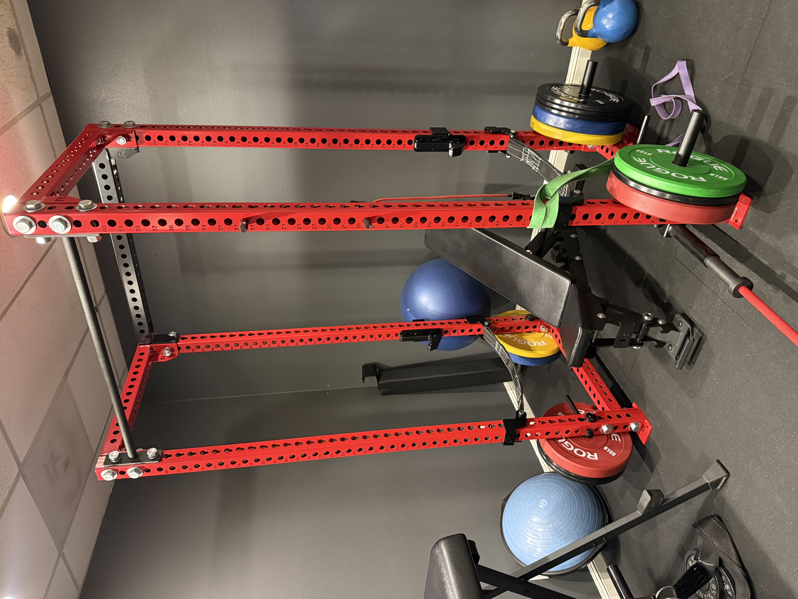
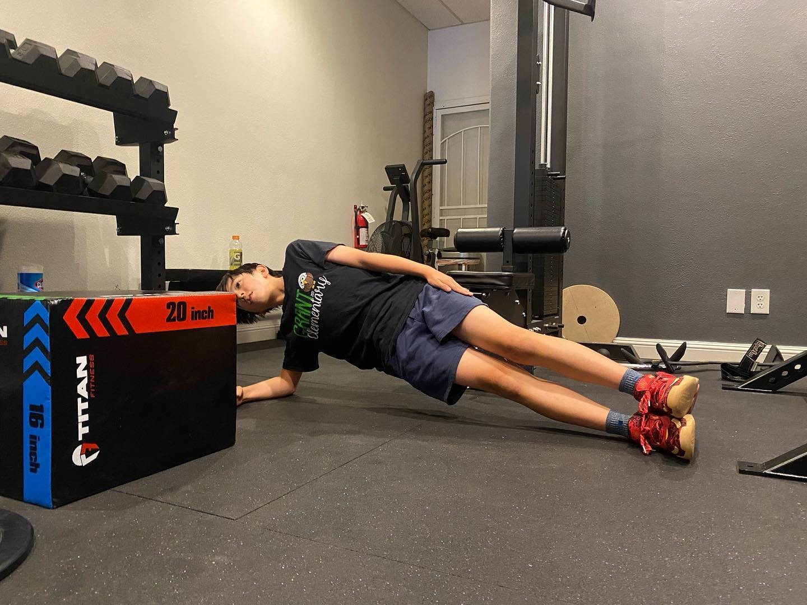

Youth Athletes
Age-appropriate movement fundamentals, gradual progression, and family-centered guidance.
Explore youth sports careSports injury care and individualized movement coaching for youth athletes, lifters, runners, and active adults in San Jose.

Dr. Nguyen connects mobility, technique, and progressive strength so you understand why a movement breaks down and how to improve it. The goal is useful coaching you can carry into your own training.
Age-appropriate movement fundamentals, gradual progression, and family-centered guidance.
Explore youth sports careSquat, hinge, push, pull, brace, and carry with technique matched to your mobility and goals.
Assessment of hip, knee, ankle, and foot mechanics when pain or overuse interrupts training.
Practical care for staying active, returning to exercise, and rebuilding confidence after injury.
Care begins by understanding the injury, the movement that provokes it, and the demands of your sport or training. Treatment may include joint care, soft tissue therapy, mobility work, technique guidance, and a gradual return to loading.
Mobility comes first. When comfortable movement is limited, strengthening around compensation can reinforce the wrong pattern.
No treatment or training plan can prevent every injury or guarantee a result. Recommendations are based on your examination, goals, and current ability.

Expect a conversation, a hands-on assessment, and practical next steps—not a generic routine.
Review your history, symptoms, goals, mobility, and the movements that matter to you.
See where technique or compensation may be limiting you and practice clearer movement cues.
Leave with a plan for recovery, training, or return to activity based on what we find.
The approximately 60-minute individualized session focuses on movement assessment, lifting setup, technique, safer mechanics, and avoiding compensations. Recommendations are based on your mobility, experience, and goals.
Yes. Guidance is age-appropriate and emphasizes control, sound technique, gradual progression, and communication with a parent or guardian.
No. Better technique, appropriate training load, recovery, and early attention to pain may help reduce avoidable risk, but no program can prevent every injury.
Appropriate technique, progressive resistance, sufficient training volume, consistency, nutrition, sleep, and recovery all matter. The right plan depends on your experience, goals, and ability to move well—not a one-size-fits-all video.
Start with a sports injury evaluation or request a one-on-one movement and lifting-technique session at VAL Chiropractic in San Jose.